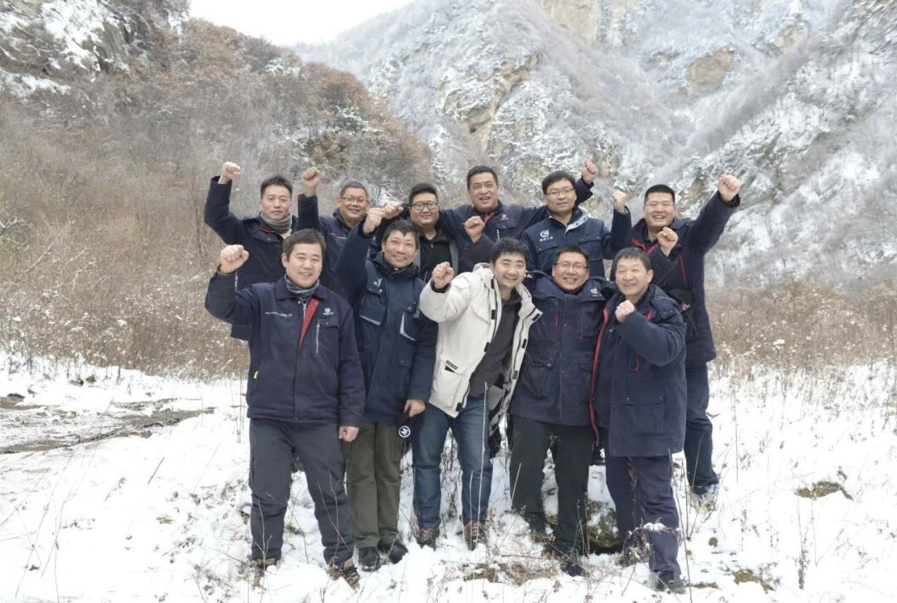

Chapter Four · Memory
What Remains
His article, “Impressions from Deep in the Snowy Mountains,” was later published in China Aviation News and received an award.

The award is not what he treasures most. He still keeps this photograph, taken at the end of the trip.
For my father, the photograph and article represent the weight of a pen. He used a notebook, a camera, and a printed newspaper to carry the workers’ story home.
This story asks me to slow down and notice the care behind the words we read.